The purpose of this project is to help you gain familiarity with the
creation of small, detailed objects commonly found in an office environment and the
application of lighting and materials available in 3D Studio Max. Another goal of this
assignment is to build a library of mesh models which will be available for your use in
the next project.
Listed below are several pieces of office equipment. Please note the point
value allowed for each object. Select enough objects such that your point total is a
minimum of 20 points. Extra credit may be earned by completing additional objects
up to a maximum of 30 points. Point values are assigned based on object complexity.
Models do not have to match the pictures shown below in every detail, but
should be comparable in the level of complexity and material textures. Pay special
attention to the selection of materials and lighting to make the object look as realistic
as possible. The higher the realism, the higher your grade! The best of the models
turned in will be put in a library for use on the next project. As an extra incentive, extra
credit points will be awarded to those whose models are selected for inclusion in the
library.
If you have another idea for an office item that you do not see listed
that you would like to create, talk to Br. Miller to negotiate a point value before
proceeding.
| Item |
Point Value |
Sketch |
Comments |
| Paper Clip |
2 |
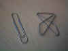 |
Complete either paper clip for full credit. |
| Rubber Band |
2 |
 |
Rubber band should contain some sort of interesting twist. |
| Book |
2 |
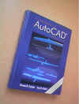 |
Interested in the shape of the book, not the title or graphics.
Eventually these will be scaled and placed in a book shelf. |
| CD |
2 |
|
Use a highly reflective surface. You may place an image on one side
if desired. |
| Mouse Pad |
2 |
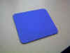 |
Watch the texture. Should like fabric. May want to place a
simple logo in one corner. |
| Notepad |
2 |
 |
Must be able to see lines in the paper. Consider using a bitmap of
an actual notebook page. |
| Sticky Notes |
2 |
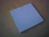 |
Choose a texture or mapping such that the sides look like individual
pieces of paper |
| Pencil |
3 |
 |
Make a traditional-looking pencil, complete with eraser and yellow paint. |
| 3-1/2" Diskette |
3 |
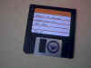 |
Add an interesting label. |
| Waste Paper Basket |
3 |
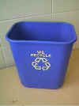 |
Recycle logo not required. |
| Pen |
3 |
 |
Create some style of retractable ballpoint pen. Pen point may be
exposed or retracted |
| In/Out Box |
4 |
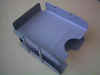 |
Only 1 layer of in/out box is required but it should be designed to be
stackable. This is an old metal variety. You are welcome to use a newer,
plastic model instead. |
| Picture w/ Frame |
3 |
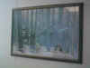 |
Place a nice looking frame around a picture of your choice. |
| Bookcase |
4 |
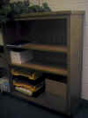 |
Create a wooden bookcase with 3 to 5 shelves. The bookcase should be
empty. |
| Scissors |
5 |
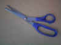 |
Use 2 different materials, as shown here. |
| Computer Mouse |
5 |
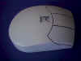 |
Any brand or style of computer mouse is acceptable. |
| Clock |
5 |
 |
Should be able to see hands (not second hand) and numbers. Hands
should be movable (manually). |
| Coat/Hat Tree |
5 |
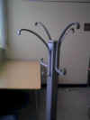 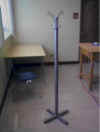 |
Create a contemporary version of the coat and hat tree in your choice of
materials. |
| Pen/Pencil Holder |
5 |
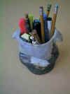 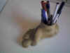 |
Pen and pencil holders tend to be conversation pieces. Do not use
just a plain looking cup - be a little creative, but don't let the level of complexity get
out of hand. |
| File Cabinet |
5 |
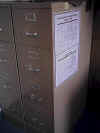 |
Create a simple 2 or 4 drawer office-style file cabinet. Your choice
of metal or wood. Make sure you remove the calendar and other items taped to the
side. |
| Tape Dispenser |
5 |
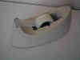 |
Be sure to use a transluscent material on the tape. |
| Stapler |
6 |
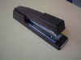 |
Use a couple of different materials on the stapler. |
| Briefcase |
6 |
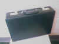 |
Note the material and detail on the latches, combination, and handle. |
| Monitor |
6 |
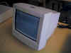 |
Place a nice looking rendering on the screen of the monitor. |
| Diskette/CD Holder |
6 |
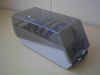 |
Be sure to make the top half of the holder out of a transparent material.
Do NOT place disks or CD inside, but dividers may be included. |
| Desk |
6 |
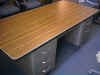 |
You may choose an all wood desk instead of a metal one as shown here.
If you would like to do a rolltop style instead, it will be worth a couple of
additional points. |
| Computer |
7 |
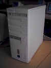 |
There are lots of style of computer cases to choose from. Either
horizontal or vertical alignment will do. You should be able to see on/off switch,
indicator lights, disk drive, CD drive, and venting as a minimum. |
| Calculator |
7 |
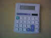 |
Any style or brand of calculator will do. Should be able to read
numbers and symbls on the keys. |
| Educational Toy/Knick Knack |
7 |
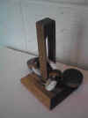 |
This puzzle is located in Brother Baird's office and is available for
inspection upon request. |
| Educational Toy/Knick Knack |
5 |
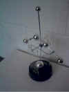 |
This educational toy is available in Brother Baird's office and is
available for inspection upon request. If you have an idea for an educational toy or
office knick knack, talk to Br. Miller to negotiate a point value before
proceeding. |
| 3-Hole Punch |
8 |
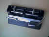 |
Should you decide to do a 3-hole punch, it is recommended that you have a
model in front of you during the modeling process. Create the punch as a series of
small components and then assemble. |
| Office Chair |
8 |
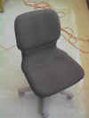 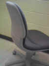 |
You may create an office chair with or without arm rests, but the chair
should have but do not create something that looklikes like a |
| Printer |
10 |
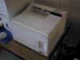 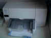 |
Any laserjet or deskjet style of printer is acceptable. Note
material differences, use of transparent materials, etc. |
| Telephone |
10 |
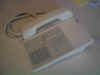 |
Be sure to include coiled telephone cord, in addition to detail on face of
phone. |
| Computer Keyboard |
10 |
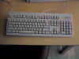 |
Any style or brand of keyboard will do. Should be able to read
numbers and symbls on the keys. |
| Plant |
10 |
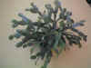 |
Other type of house plants are also acceptable. May include simple
planter, but it should be modeled separately. |